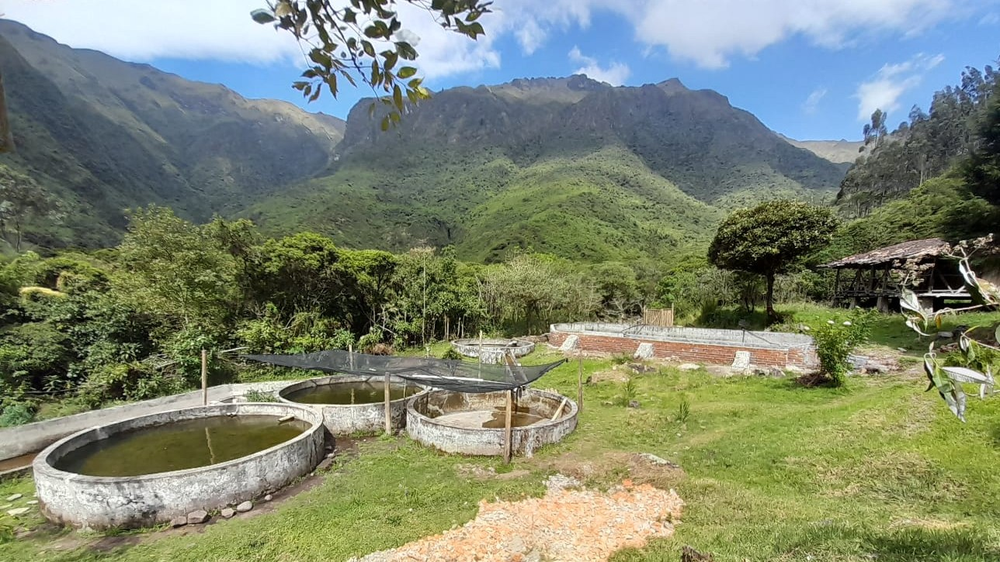

Bienvenidos
Tu refugio natural en el corazón del campo
Disfruta de una experiencia única de turismo rural, rodeado de montañas, aire puro . En la rinconada donde encontrarás paz, naturaleza y tradición.
Sobre nosotros:
La rinconada de Pijal es un espacio creado para reconectar con lo esencial. Somos una familia dedicada a la agricultura y al turismo rural. Nuestras instalaciones están diseñadas para ofrecer comodidad sin perder el encanto rústico del campo. Aquí no solo vienes a hospedarte, sino a vivir la vida rural de cerca: alimentar animales, cosechar, cocinar con productos frescos y compartir junto al fuego.
¿Qué ofrecemos?
- Cabañas cómodas
- Camping
- Comida casera y orgánica
- Senderos ecológicos
- Fogatas familiares
- Pesca deportiva
Video
Dirección
EcuadorProvincia de Imbabura
Canton Otavalo
Parroquia Gonzalez Suarez
Comunidad de Pijal